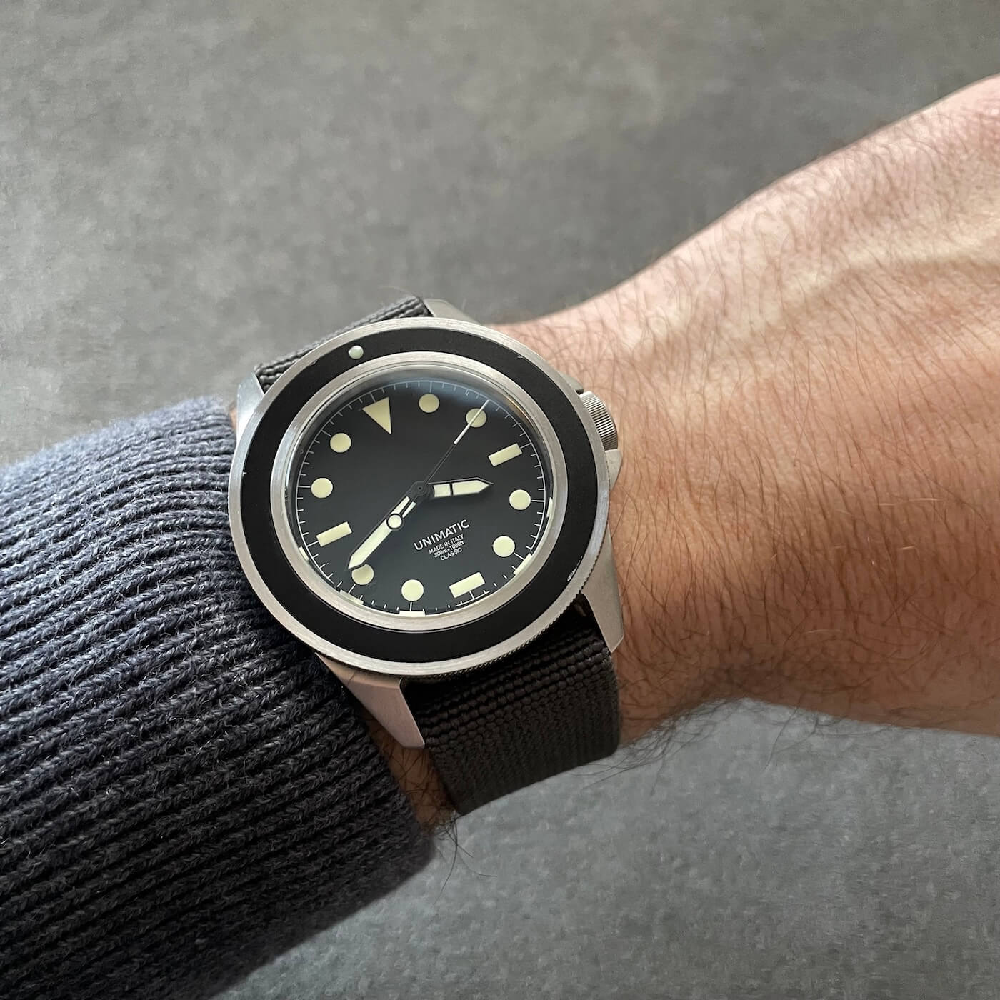
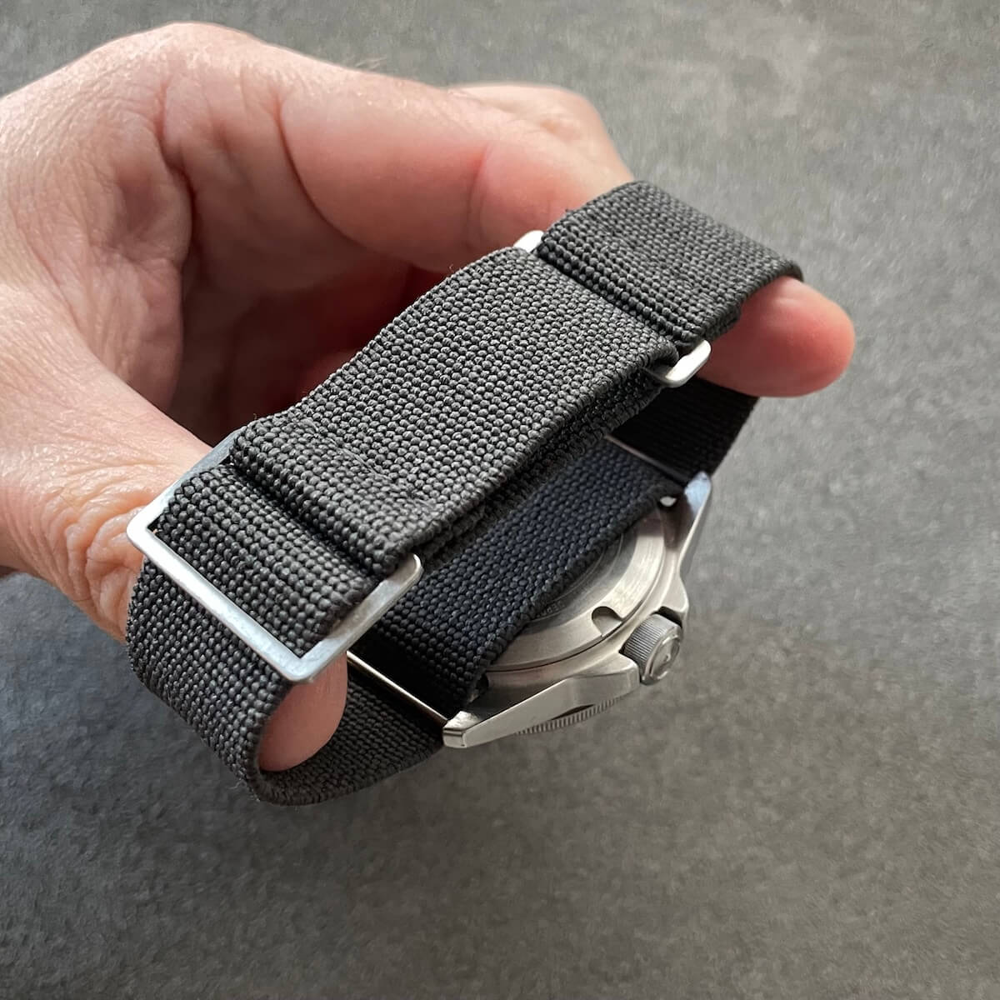
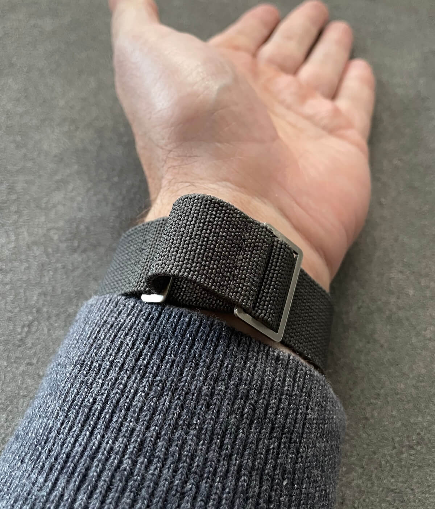
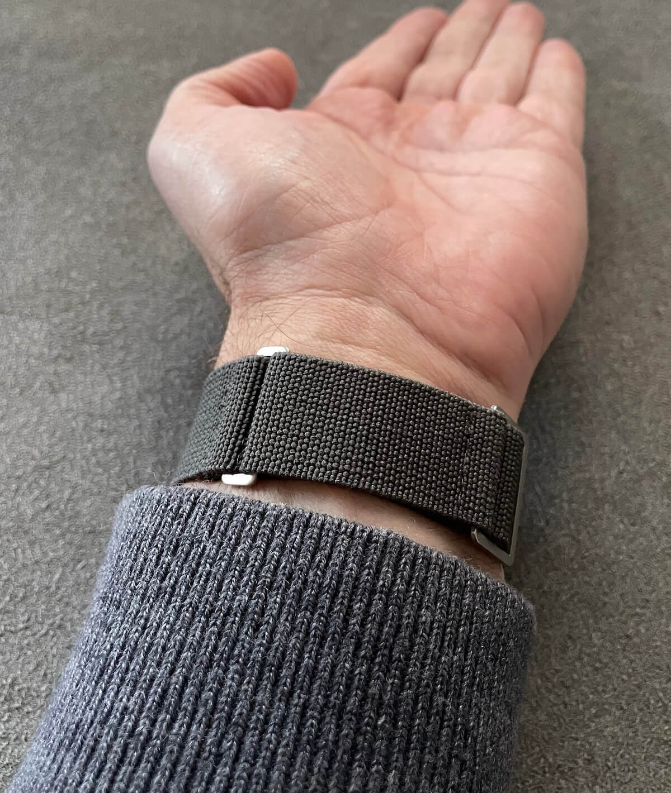

I Found the Perfect Watch Strap, and It’s Ruining Me
They say the thrill is in the hunt, but for me the hunt might officially be over. As a watch enthusiast, and especially as the founder of StrapHunter, this is a dangerous thing to admit.
I have found the perfect watch strap.
 Nenad Pantelic • December 12, 2025
Nenad Pantelic • December 12, 2025

And to be honest? It’s ruining me. It is ruining the hunt, it is ruining the shopping experience, and it makes me question everything when I look at new straps.
I hate how much I love it.
The "End Game" Setup
For many years I cycled through leather, standard nylon natos, rubber, and of course, the steel bracelets. I enjoyed them all for different reasons, but there was always a "but." But it’s too stiff. But the holes are spaced wrong. But the buckle scratches my laptop.
Then one day I gave it a thought and modded an existing strap into the specific configuration that solved everything: Elastic nylon paired with a sliding, sewn-in ladder buckle.



This setup is the absolute end game for my lifestyle. For multiple reasons:
- Infinite Adjustability: There are no holes. I don’t have to choose between too tight and too loose. As my wrist swells during a run or shrinks in the cold office AC, I just slide the buckle a millimeter. Perfect fit, every time.
- The what I like to call "Ghost" Factor: It is so comfortable and unobtrusive that I genuinely forget I am wearing a watch. There are times I panic for a split second thinking I lost my watch, only to look down and see it on my wrist.
- Balance: It has the structural integrity to hold my top-heavy divers without flopping around, but it is also soft enough for my lightest pieces.
- Almost invisible metal hardware: Because it uses a sliding ladder buckle rather than a bulky tang buckle, metal hook, or a clasp, it is incredibly low profile. I can type for hours without feeling a hunk of steel digging into my wrist or scratching my MacBook.
I am so committed to this setup that I currently own it in almost ten different colors. Mustard yellow for summer, grey for the gym, MN-stripe for the weekends. If I buy a new watch, I don't even shop around for straps anymore. I just grab another one of these in a matching color.
The Only Thing I Actually Want To Wear
Of course, I’m not delusional and I know this setup isn't for every single moment. Objectively speaking, the setup is very casual.
When I need to suit up for a wedding or attend a meeting, I still reach for my leather straps or just put on a classic stainless steel bracelet.
But truth be told, this elastic setup covers 90% of the situations I find myself in during a week. From desk work to grocery runs, from hiking, playing the kids, to casual dinners, it is the only thing I actually want to wear.
The Curse
You would think finding The Perfect One would be a cause for celebration. But as a collector, it has created a mental blockade. I find myself browsing strap stores, looking at beautiful, artisanal leather straps or high-tech rubber options, and my brain instantly lists the downsides.
"That leather is gorgeous, but it has fixed holes. It won’t fit perfectly."
"That NATO looks cool, but the tuck-in is going to catch on my jacket sleeve."
"This new sailcloth deployant is probably very comfortable, but just look at that bulky buckle that will destroy my laptop case."
I have become reluctant to buy new straps because I know, logically, they will be functionally inferior to my elastic/ladder setup. I have stopped experimenting because I already know the outcome.
The Reviewer’s Perspective
Initially, I worried that this obsession would compromise my ability to run StrapHunter. How can I be an objective reviewer when I’ve already found my holy grail?
I had a fear I would unfairly judge every leather or rubber strap simply because it wasn't "my" elastic setup.
But I realized that I was looking at it wrong.
The fact that I have a personal favorite doesn't break my review process. It clarifies it.
I realized that my job isn't to ask, "Is this strap better than my elastic one?" My job is to speak to the audience and ask: "Who is this strap for?"
I can still objectively review a product based on its own merits and features. I can appreciate a structured leather strap for What is offers to a dress watch collector, or a rubber strap for What is offers to a professional diver. Even if neither of them is what I want on my wrist.
It is a good problem to have (personal comfort) and a bad problem to have (limitations on my personal perspective), but it has forced me to become a more empathetic reviewer. I have what I like, but I can still help you find what you like.